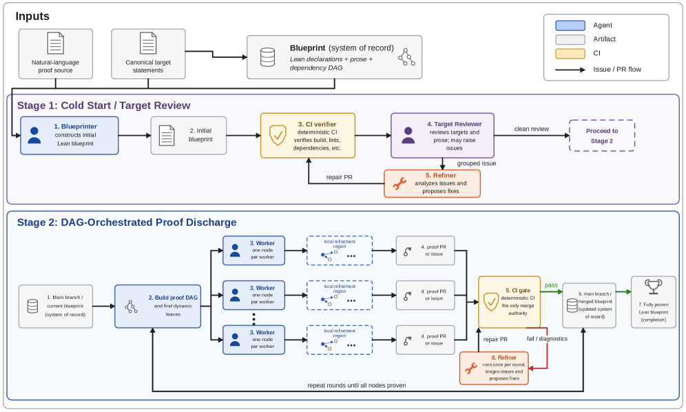
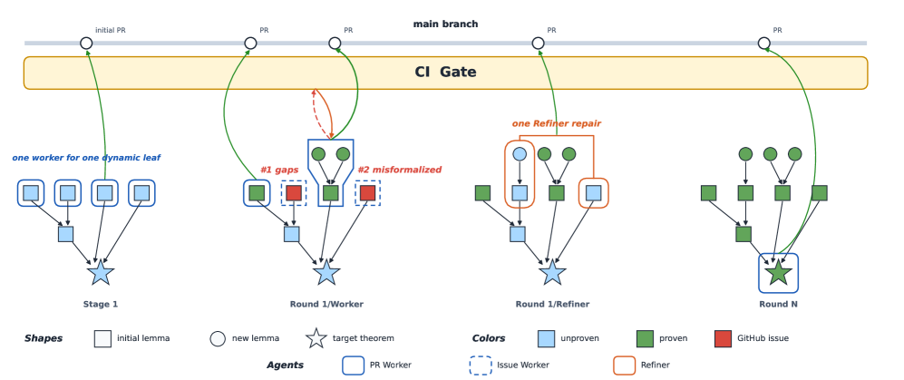

Multi-agent harness that autoformalizes research mathematics into Lean via an evolving blueprint, with CI-gated agents writing and proving lemmas.
Abstract
Long-horizon autoformalization of research mathematics fails not only at hard lemmas, but at scale: statements drift, dependencies tangle, context decays, and local repairs corrupt distant work. We present LeanMarathon, a multi-agent harness for reliable research-level Lean autoformalization. Its core abstraction is an evolving blueprint: a Lean file that serves simultaneously as formal proof skeleton, natural-language proof graph, and shared system of record. Four contract-scoped agents construct, audit, prove, and repair this blueprint. These agents are coordinated by a two-stage orchestrator that first stabilizes target fidelity through adversarial review and then discharges the proof directed acyclic graph (DAG) from its dynamic leaves upward in parallel CI-gated rounds. LeanMarathon turns one brittle multi-hour run into many local, recoverable, parallel transactions. We evaluate LeanMarathon on two recent research papers spanning four Erdős problems (#1051, #1196, #164, #1217). Across three autonomous runs, it formalizes all seven target theorems with no sorry, proving 258 lemmas and theorems. These results show that reliable AI co-mathematics requires not only stronger provers, but durable harnesses that preserve target fidelity across long mathematical developments. The code can be found at https://github.com/YuanheZ/LeanMarathon.
Problem
Long-horizon autoformalization of research mathematics fails at scale because statements drift, dependencies tangle, context decays, and local repairs corrupt distant work. Existing provers can discharge individual lemmas but cannot maintain coherence across an entire paper-length Lean development.
Approach
LeanMarathon is a multi-agent harness organized around an evolving blueprint: a Lean file that simultaneously serves as a formal proof skeleton, natural-language proof graph, and shared system of record. Four contract-scoped agents (Blueprinter, Target-Reviewer, Worker, Refiner) construct, audit, prove, and repair this blueprint. A two-stage orchestrator first stabilizes target fidelity through adversarial review, then discharges the proof DAG from its dynamic leaves upward in parallel CI-gated rounds.

Figure 1: Overview of LeanMarathon.
Results
Across three autonomous runs on two recent papers spanning four Erdos problems (#1051, #1196, #164, #1217), LeanMarathon formalizes all seven target theorems with no sorry, proving 258 lemmas and theorems in total. The Erdos-Graham formalization produced 8,513 Lean lines in about 3 days wall-clock time. Aristotle, the commercial baseline, failed on both papers.

Figure 5: The DAG-based orchestration of stage 2.
Paper
Target theorems
Lean lines
Proof nodes
Remaining sorry
Status
Erdos-Graham
4
8,513
111
0
complete
#1196
1
3,988
44
0
complete
#164 & #1217
2
14,592
147
0
complete
LeanMarathon formalization results across three paper targets